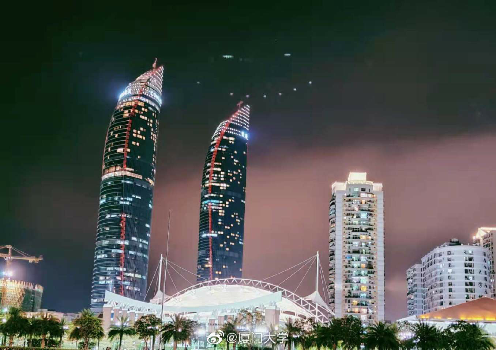

在日语中，“夏天结束了”是有特殊含义的。
它代表夜风中的凉意，代表蓦然间忽然听不到的蝉鸣，挥洒汗水又略带遗憾的甲子园，一封没寄出的信，烟花大会最后一颗花火升空盛开，青春潦草散场，学校大门缓缓关闭，我们被时光裹挟着匆忙长大成人。
三年前的夏天结束时，我来到了厦门。
年少的情绪总是敏感，稍一发酵便不可收拾。青春的仓促别离，离乡的不舍与惶恐，军训的压抑与烦郁，新生活的不适与小心翼翼的社交。细说并不沉重，但繁繁絮絮地堆叠后，在初秋沉默又冗长、劳累的拉练时，在深夜环岛路的晚风中，还是积成了庞然的怪物，使人几欲落泪。
所幸，也是在那个夜里，我感受到了厦门这座城市在夏夜里的力量。静谧的车流映着霓虹灯光，厚重的海潮，海风与树叶的重奏，沙滩上与沿路零星的光点与依偎的人影，明月与星光下的吉他与歌手，在拉练人潮旁勇敢拥吻的情侣，还有身边刚刚结识仍显羞赧，但不掩热情与温柔的小孩儿。
夏末秋初的厦门没能成为我夏天的结束。它用它的魅力，用它流淌在双子塔与都市繁华之中的精致，奏响在山中树植与海边浪潮的情调，凝刻在厦门人和厦大er的浪漫，为我开启了新的夏天。
我越来越喜欢厦门和我的学校。
我喜欢在白城看台的晚灯下远眺人海与远方，喜欢在沙滩上和好友放飞的孔明灯，和早已被风和时间吹走的幼稚的沙滩文字。

我喜欢骑着车穿越芙蓉隧道，喜欢盯着自己亲手执笔倾注心血的那幅壁画，想象数十年后的自己来看它的模样，在壁画的簇拥下驶向未来。
我喜欢闲适地爬上后山，穿过思源谷的流水与落花，和友人一起享受快乐的高尔夫球课。
我喜欢仅有寥寥数人与我在经院楼同上的课，纪洋老师温柔的教学声与楼下公共钢琴处”如约”响起的《海德薇变奏曲》交织，如处梦中的魔法世界。
我还喜欢海韵落日的火烧云，喜欢躺在演武场看着星空与世界，喜欢流星落下的那天夜里，公寓楼起此彼伏的惊呼。喜欢俯瞰上弦场里的众生，喜欢宏伟震撼又书卷气的翔安图书馆，喜欢着身边的大家。

晃眼数年，不知不觉已经是本科生涯在厦的最后一个夏天了。身边的友人或已离开厦门各奔前程，或碌于前程，或终竟陌路。科研，毕业，就业，考研…现实的压力终于如潮水般涌来，将我几欲吞没。
这个夏天，我留在了厦门。但是它却成为了我最乏味的一个夏天。
每日两点一线地往返于实验室与寝室中，无数次返程匆匆抬头看海与天，心中却只在重复着刚刚还没记熟的单词。与外界的交往越来越淡，与最疼惜与喜欢的人也形同陌路。提着买一送一的奶茶，彷徨不知何处可送，只能一人独酌。愁苦与思绪，和撑腻的奶茶一同涌上心头，久久不能弥散。
年少潮湿的回忆，大雨与香樟，所有的眼泪和拥抱，所有刻骨铭心的灼热年华，所有繁盛而离散的生命，终至于此。
“
行走在人生之夜的我啊，
盲目地 骚动地 妄想地活着。
只是在夏天的气息里合上双眼，
用手指描摹云的高度。
只希望看着回忆是我的任性吗？
“
三年后的此刻，外出准备返程的我，顺着这已熟稔到乏味的环岛路的夜色，伴随着海潮的阵阵声浪，越过白城沙滩零星的光点与依偎的人影，最后站在因疫情阑珊萧索的校门口时，骤然被夜中的晚风凉得一颤。
夏天结束了啊。